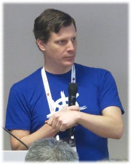

Kubernetes & security
Every conference venue has problems with the mix of room sizes, but I don't recall ever going to a talk that so badly needed to be in a bigger room as Jessie Frazelle and Alex Mohr's talk at CloudNativeCon/KubeCon Europe 2017 on securing Kubernetes. All the chairs filled up half an hour before the start; then much of the remaining volume of the room filled up, and still people were trying to get in. Had there been a fire at this point, most of western Europe's Kubernetes clusters might have had to go without care and feeding for a while. The cause of the enthusiasm was the opportunity to get "best practice" information on securing Kubernetes, and how Kubernetes might be evolving to assist with this, directly from the source. Mohr and Frazelle work for Google; Mohr is currently technical lead and manager for Google Seattle's Kubernetes and Container Engine teams, and Frazelle has been a Docker core maintainer and is famous for containerizing everything in sight.
Security evolution
Historically, they said, Kubernetes's security model was pretty flat and simple. As of 1.5, there is a "single tenant" model: one trust boundary, being the cluster itself, and everyone inside that is effectively an administrator. Authorization is granted at cluster level; the nodes all have the same authenticated identity, and the pods all have the same permissions and full network access. If team one and team two will play nicely together, their pods can run on the same cluster; but if separation is needed, each team needs its own cluster.
With the release of 1.6, the concept of multiple users has been added, but Frazelle said there is "not much" enforcement, so the cluster is still the only truly effective trust boundary. With 1.7, they said (adding a small question mark to indicate that we're now talking about the future, so anything could happen), we get "cooperative soft multi-tenancy", meaning that we get fine-grained authentication but that it's not fully hardened, so with adequate trust and audit, it could work for some environments. In this future, namespaces and resources (initially, nodes) become the boundaries; what a pod can do becomes controlled by the permissions granted to the namespace in which it runs, and to the node on which it runs.
With that kind of change, then some kind of identity and access management is needed. The "three pillars" of this are authentication for users, system components, and workloads. For users, Kubernetes doesn't seem to be welding itself to any one mechanism, embracing such diverse solutions as basic HTTP authentication, static bearer tokens, X.509 client certificates, service account tokens, OpenID Connect (this raising a small cheer from me), and having hooks to build a custom solution. Whichever mechanism you opt for, Kubernetes will use it to produce a username, a UID, and an optional list of groups.
A slide showed a PKI-based example of system component authentication, where nodes and the master authenticate each other via a cluster-specific certificate authority. For workload authentication, Kubernetes will use JSON Web Tokens (JWTs) handled via Kubernetes service accounts (SAs). The SA controller will sign JWTs for all SAs, which will be stored as secrets using the Kubernetes API; pods acquire SAs by virtue of their configuration, then use the associated JWTs as bearer tokens when requesting resources from the master.
Once you have authenticated, Kubernetes authorizes you to do things based on the new Role-Based Access Control (RBAC), which is present for the first time in Kubernetes 1.6. As Mohr said, RBAC is only in beta in 1.6, but they expect this will be the primary method for authorization in Kubernetes going forward, so attendees were encouraged to try it out and log bug reports and feature requests if it's not what they want.
This was followed by a brief RBAC example based around the get and list commands for pods and nodes, a pair of roles (one of which could get and list pods but not nodes, and one of which could get and list both), and a user account that was bound to the former role (thus gaining the ability to get and list pods, but not nodes) while a service account and a group were bound to the latter (thus gaining the ability to get and list both pods and nodes). Mohr's single most helpful observation at this point was that he thought that the online documentation was already pretty complete, so those wishing to dig down into it should be well catered for.
Mohr said that if you're performing authorization, then audit is important. The Kubernetes APIserver currently logs an ID, timestamp, requesting IP, a user and namespace, the request URI, and in a separate line, the response code. This capability is expected to improve over time.
Anything hosted inside Kubernetes that expects to interact meaningfully with the rest of the world will need to be able to authenticate outside Kubernetes, which requires secrets: database logins, SSL keys, GitHub access tokens, and so on. This took Mohr neatly onto the question of secure storage of these secrets, which is expected to continue much as it's done now: the secret is Base64-encoded then placed in a YAML file. A pod can then use that secret if its YAML configuration permits; the secret is made available to the container via either an environment variable or a file mount, from which the containerized application can use it. The latter is more complex to use but better adapted to distributing changes in your external secrets, assuming anyone ever rotates their keys.
Runtime security
Frazelle went on to talk about runtime security, noting that containers are structures built out of Linux primitives including namespaces and control groups (cgroups), the former generally controlling what you can see and the latter generally controlling what you can use. Combined, they do much to provide isolation for the container, but she noted that it is not enough. If you need isolation that you can have real confidence in, it is necessary to add hardening on top. AppArmor uses the kernel's security module interface to control and audit access to various system resources, including file access and some system functions (mounting, accessing the network, and so on). Docker ships with sane AppArmor defaults, including blocking writing to /proc and /sys and preventing the mounting of filesystems. She gave a terse example of spinning up a containerized NGINX that took advantage of these defaults.

Useful as AppArmor is, it doesn't allow control of all system functions. Seccomp is another supported hardening tool that gives control over all system calls: you define exactly which system calls your application is allowed to run, and it terminates a process that tries to step outside that set. Again, Kubernetes now contains sensible default policies for seccomp, though they are in alpha in 1.6, and Frazelle gave an example of running NGINX subject to those defaults. The system call whitelist in Kubernetes apparently took some time to write, and has been subject to a lot of testing to ensure that it didn't gratuitously break any standard applications. The (in)famous SELinux is also supported; there are hooks to set SELinux contexts for volumes, for example.
In addition, a number of security context options now ship in Kubernetes, including one that requires a container not to run as root, one that requires a read-only root file system (if your application can support it, which is apparently quite difficult), and there are easy hooks to allow the adding and/or dropping of particular Linux capabilities.
At this point, Frazelle gave a demo showing the use of seccomp in Kubernetes with its default settings to prevent breaking out from a container via the Dirty COW exploit against a (demonstrably) vulnerable kernel. She felt that one important part of the demo was that the application (which again was NGINX) was unaffected by being run under the shipped default seccomp policy. She encouraged attendees to start using it for everything that didn't specifically need to do privileged things like mounting filesystems.
Mohr's summary of where Kubernetes security is now, and is going, is that he wants to get to hard multi-tenancy — the point where he can be comfortable running code from multiple third parties, with the potential for malice that implies, in the same cluster. Anyone doing this now should note how far into the future he sees this arriving. Currently, with 1.6, we get single tenancy but multiple identities with RBAC. Pods generally do not need to run as root. The supplied (though optional) hardening mechanisms described above can be used to increase isolation of containers and minimize the risk of breakout. With 1.7, he expects to see soft multi-tenancy. A process that manages to escape from a container would be limited to the privileges of the node on which they were running. Secrets management and audit logging will improve. He expects that seccomp will become active by default sometime around then. With 1.8, due September 2017, we will move toward hard multi-tenancy. Tools for binary verification may be provided. Resource isolation between containers will improve, to prevent things like cycle stealing. Support for organizationally mandated security policies will likely be added.
So, to recap: to secure your Kubernetes cluster as best you can, get to 1.6 as soon as is convenient, and start using the RBAC and hardening tools provided to ensure your containers start running with the least needed privileges, and stay that way. The next couple of versions of Kubernetes are likely to provide expanded versions of these tools and default to using them, so moving to them now will leave you best-placed to take full advantage of the security features to come.
[Thanks to the Linux Foundation, LWN's travel sponsor, for assistance
in getting to Berlin for CNC and KubeCon.]
| Index entries for this article | |
|---|---|
| Security | Containers |
| Security | Kubernetes |
| GuestArticles | Yates, Tom |
| Conference | CloudNativeCon+KubeCon/2017 |
Posted Apr 19, 2017 14:58 UTC (Wed)
by NightMonkey (subscriber, #23051)
[Link]
Posted Apr 20, 2017 1:22 UTC (Thu)
by philipsbd (subscriber, #33789)
[Link]
Great article. Thanks! The video for is now available too. A related talk from the same conference on how Kubernetes handles security releases. If you are interested in trying out Kubernetes with RBAC, etc turned on checkout Tectonic which sets up Kubernetes both with RBAC on and with AuthN being handled by an OpenID Connect Provider (Dex) which can be backed by LDAP, etc and then tie into the Kubernetes RBAC. Another interesting proposal around mapping Kubernetes roles and quotas to things like LDAP as well which started being discussed on Kubernetes SIG Auth recently.
Posted Apr 20, 2017 3:20 UTC (Thu)
by bergwolf (guest, #55931)
[Link] (2 responses)
Posted Apr 20, 2017 7:14 UTC (Thu)
by mjg59 (subscriber, #23239)
[Link] (1 responses)
Posted Apr 22, 2017 3:09 UTC (Sat)
by bergwolf (guest, #55931)
[Link]
Kubernetes & security
Kubernetes & security
Excellent article!Kubernetes & security
w.r.t. kubernetes runtime security, there is also hypervisor-based container runtime frakti in the kubernetes organization. It lets Kubernetes run pods and containers directly inside hypervisors via HyperContainer. It is light weighted and portable, but can provide much stronger isolation with independent kernel than linux-namespace-based container runtimes.
Kubernetes & security
To compare hyeprcontainer and rkt's kvm-based stage1 is in fact comparing
hypercontainer vs. clearcontainer since kvm-based stage1 in rkt leverages clearcontainer.Kubernetes & security
hypercontainer and clearcontainer are different implementations of the same idea of hypervisor-based appc runtime. One difference is that clearcontainer depends on highly-customised qemu-kvm called qemu-lite, while hypercontainer is hypervisor-agnostic (qemu-kvm, xen, virtual box) and architecture-agnostic (X86_64, arm, ppc, s390). Another perhaps more important difference is that hypercontainer works on the de facto standard docker images while clearcontainer/rkt works on the rkt image format ACI and needs conversion to work with docker images.
One common part is that clearcontainer uses hypercontainer's core component hyperstart as its management portal inside the virtual machine. While these two are different implementations, there is ongoing work to unify the common part of them as virtcontainer.